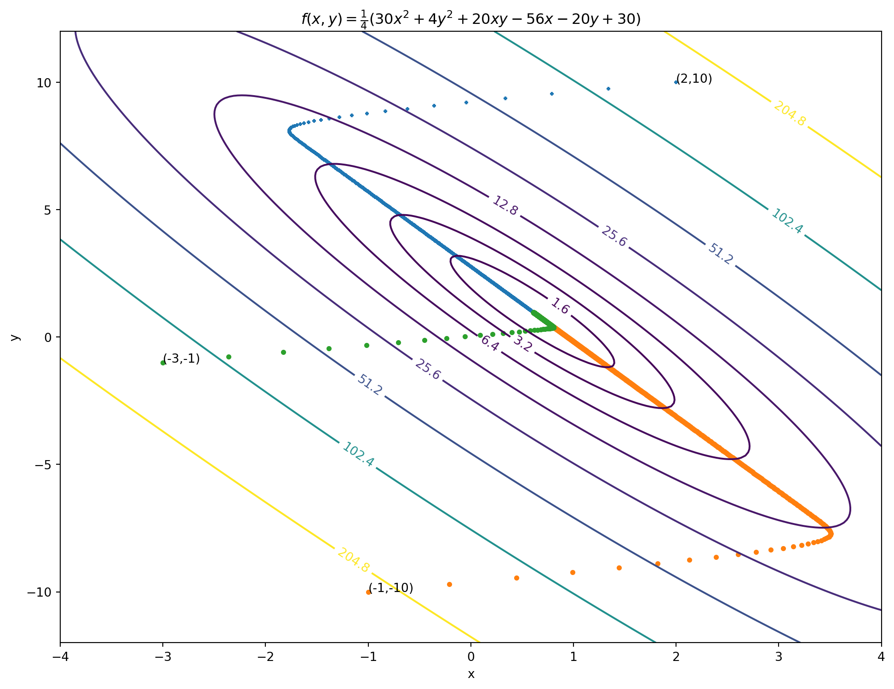

0x01 线性回归
徐岩
一、认识数据
例：北京某小区房价数据
| area | price | |
|---|---|---|
| 0 | 62.9 | 680 |
| 1 | 44.3 | 485 |
| 2 | 57.4 | 555 |
| 3 | 62.4 | 620 |
| 4 | 57.4 | 585 |
| 5 | … | … |
- 行、列
- 特征（属性）
- 标签
二、问题与建模
问题与假设
- 问题：给定一组住房成交数据，每条数据有一个属性（面积 \(area\) ），一个标签（价格 \(price\) ），建立模型，能够实现给定一个新挂牌的房子的面积，预测它的成交价
- 假设：所有\((area,price)\)点在同一条直线附近
建模
- 训练集 \(T\)：采集到的样本数据
- 一个训练数据记为 \((x,y)\)，第 \(i\) 个训练数据记为 \((x_i,y_i)\)
- 训练集大小：\(m\)
- \(T=\{(x_1,y_1),(x_2,y_2),...,(x_m,y_m)\}=\{(x_i,y_i)\}\)
- 决策函数假设：\(f(x)=kx+\)，属性 \(x\) 相应的预测结果 \(f(x)\)
- 损失函数: \(L(k,b;T)\)，在已知训练集 \(T\) 的情况下关于决策函数参数 \(k,b\) 的函数，用于量化参数的效果，即在训练集上预测值与真实值的差距，一般越小越好。
- \(L(k,b;T)=\frac{1}{m}((f(x_1)-y_1)^2+(f(x_2)-y_2)^2+...+(f(x_m)-y_m)^2)=\frac{1}{m}\sum\limits_{i=1}^m(f(x_i)-y_i)^2\)
- 学习问题（最优化问题）：选择某种算法，如导数法、配方法、梯度下降法等，求解使得 \(L(k,b;T)\) 取最小值时的参数 \(k,b\)
建模

三、单参数线性回归
- 训练集 \(T=\{(1,2),(2,1),(3,4),(4,3)\}\)， \(m=4\)
- 决策函数：简单起见，假设 \(f(x)=kx\)
- 损失函数: \[L(k;T)=\frac{1}{4}((f(x_1)-y_1)^2+(f(x_2)-y_2)^2+(f(x_3)-y_3)^2+(f(x_4)-y_4)^2)\]
function f(currentSlope,t) {
// 数据部分
const data = [
{x: 1, y: 2},
{x: 2, y: 1},
{x: 3, y: 4},
{x: 4, y: 3}
]
// 交互式滑动条
// 计算函数
function getPredictions(slope) {
return data.map(d => ({...d, y_pred: slope * d.x}))
}
function computeLoss(slope) {
return data.reduce((sum, d) => sum + (d.y - slope * d.x)**2, 0) / data.length
}
// 参数-损失曲线数据
const slopes = Array.from({length: 200}, (_, i) => -2 + i * 7/200)
const lossData = slopes.map(s => ({ slope: s, loss: computeLoss(s) }))
function mid(pred) {
return data.map((num,i)=>({x:(num.x+pred[i].x)/2, y:(num.y+pred[i].y_pred)/2,gap:Math.abs(num.y-pred[i].y_pred)}))
}
let m=mid(getPredictions(currentSlope))
// 第一个图：数据点和预测线
const plot1 = Plot.plot({
marks: [
Plot.frame(),
Plot.dot(data, {
x: "x",
y: "y",
fill: "steelblue",
r: 4
}),
Plot.line(getPredictions(currentSlope).concat([{x:0,y_pred:0*currentSlope},{x:5,y_pred:5*currentSlope}]) ,{
x: "x",
y: "y_pred",
stroke: "orange",
strokeWidth: 2,
}),
Plot.text(m,{x:"x",y:"y",text:(d) => `${d.gap.toFixed(2)}`,fontSize:16,dx:18}),
Plot.text([[0,0]],{dx:29,fontSize:16,text:[`y=${currentSlope.toFixed(2)}x`]}),
Plot.text([[2,7]],{dx:30,fontSize:16,text:[ `Cost=(${m[0].gap.toFixed(2)}^2+${m[1].gap.toFixed(2)}^2+${m[2].gap.toFixed(2)}^2+${m[3].gap.toFixed(2)}^2)/4=${computeLoss(currentSlope).toFixed(2)}`]}),
Plot.ruleX(data, {
x: "x",
y1: "y",
y2: d => currentSlope * d.x,
strokeWidth: 1.5,
strokeOpacity: 0.6,
}),
Plot.axisX({fontSize:16})
],
style: {fontSize: "16px"},
x: { domain: [0, 4.9], label: "x", },
y: { domain: [-2, 7.9], label: "y" },
width: 600,
height: 400,
// title: md`df $k$`
// title: `损失=(${m[0].gap.toFixed(2)}^2+${m[1].gap.toFixed(2)}^2+${m[2].gap.toFixed(2)}^2+${m[3].gap.toFixed(2)}^2)/4=${computeLoss(currentSlope).toFixed(2)}`
})
// 第二个图：损失函数曲线
const plot2 = Plot.plot({
marks: [
Plot.frame(),
Plot.line(lossData, {
x: "slope",
y: "loss",
stroke: "#984ea3",
strokeWidth: 1.5
}),
Plot.dot([{ slope: currentSlope, loss: computeLoss(currentSlope) }], {
x: "slope",
y: "loss",
fill: "#ff7f00",
r: 6
}),
Plot.axisX({fontSize:16})
],
style: {fontSize: "16px"},
x: { domain: [-2, 5],label: "参数 (k)" },
y: { domain: [-10, 125],label: "损失 " },
width: 600,
height: 400
})
if(t==1) return plot1
else return plot2
}训练集 \(T=\{(1,2),(2,1),(3,4),(4,3)\}\)， \(m=4\)
决策函数：简单起见，假设 \(f(x)=kx\)
损失函数:
\[ \begin{align} L(k;T)&=\frac{1}{4}((f(x_1)-y_1)^2+(f(x_2)-y_2)^2+(f(x_3)-y_3)^2+(f(x_4)-y_4)^2) \\&=\frac{1}{4}((k-2)^2+(2k-1)^2+(3k-4)^2+(4k-3)^2)\\&=\frac{1}{4}(30k^2-56k+30) \end{align} \]解决最优化问题：求使得 \(L(k;T)\) 取得最小值的参数 \(k\) 值
- 方法1：解析法（配方法）。\(L(k;T)\) 是关于 \(k\) 的二次函数，易得当 \(k=\frac{56}{60} \approx 0.933\) 时，\(L(k)\) 取得最小值
练习1
- 给定训练集 \(T=\{(1,2),(2,3),(3,4),(4,2)\}\)， \(m=4\)
- 决策函数：假设 \(f(x)=kx\)
- 写出损失函数，并求最优参数 \(k\)
切线与导数
- 割线：记 \(A\) 为图像上一个定点，\(B\) 为图像上 \(A\) 附近的点，称直线 \(AB\) 为图像的割线
- 切线：当 \(B\) 无限接近 \(A\) 时，割线 \(AB\) 无限接近经过 \(A\) 的一条直线 \(l\)，称 \(l\) 为图在点 \(A\) 处的切线。切线反映了切点附近函数值的变化趋势
- 导数：切线的斜率
例：\(y=\frac{1}{8}x^2\) 在点 \(A(2,0.5)\) 处的切线
例：\(f(x)=\frac{1}{8}x^2\) 在点 \(A(2,0.5)\) 处的切线斜率
- 方法一：记 \(B\) 点坐标为 \(B(2+\Delta x,f(2+\Delta x))\)，然后计算直线 \(AB\) 的斜率：\(\frac{f(2+\Delta x)-0.5}{2+\Delta x-2}\)，给 \(\Delta x\) 一个非常小的值，如 \(0.00001\)，得到切线斜率 \(f'(2)\) 的近似值，如 \(0.50000125\)，如果觉得不满意，就把 \(\Delta x\) 再小一些……
0.500001250003379方法二：对 \(\frac{f(2+\Delta x)-0.5}{2+\Delta x-2}\) 继续进行推导，\(\frac{f(2+\Delta x)-0.5}{2+\Delta x-2}=\frac{1}{2}+\frac{1}{8}\Delta x\) ，当 \(\Delta x\rightarrow 0\) 时，\(\frac{f(2+\Delta x)-0.5}{2+\Delta x-2}\rightarrow \frac{1}{2}\)，可以认为 \(f'(2)=\frac{1}{2}\)
事实上，\(f(x)=\frac{1}{8}x^2\) 的过任意点 \(A(x,f(x))\) 的切线斜率 \(f'(x)\) 都可以按如上方法推导
事实上，\(f(x)=ax^2+bx+c\) 的过点 \(A(x,f(x))\) 的切线斜率 \(f'(x)\) 也可按如上方法推导
练习2
推导 \(f(x)=2x^2+3x-4\) 在任意点 \(A(x,f(x))\) 的导数
推导 \(f(x)=ax^2+bx+c\) 在任意点 \(A(x,f(x))\) 的导数，其中 \(a,b,c\) 为参数
答案：
- \(f'(x)=4x+3\)
- \(f'(x)=2ax+b\)
切线斜率与最值的关系
- 训练集 \(T=\{(1,2),(2,1),(3,4),(4,3)\}\)， \(m=4\)
- 决策函数：简单起见，假设 \(f(x)=kx\)
- 损失函数: \(L(k;T)=\frac{1}{4}(30k^2-56k+30)\)
- 方法2：导数法。\(L(k)\) 的导数 \(L'(x)=15k-14\)，令 \(L'(x)=0\)，解得 \(k=\frac{14}{15} \approx 0.933\)。由于 \(L(k)\) 良好的性质，导数为 \(0\) 的点很容易求得，并且在导数为 \(0\) 的点取得最小值
梯度下降法
- 解析法（配方法）和导数法有局限性，有时损失函数\(L\)不容易直接求得最值点，或者\(L'\)不容易求得零点
- 梯度下降法：从某一个选定的点出发，沿着梯度（导数）方向移动点，不断接近极值点的数值算法（有误差，但可控）。它是机器学习甚至更广泛领域常见的优化方法。
| Points | x | y |
|---|---|---|
| P1 | -2 | 65.5 |
| P2 | -0.24 | 11.292 |
| P3 | 0.464 | 2.61872 |
| P4 | 0.7456 | 1.231 |
| P5 | 0.85824 | 1.00896 |
| P6 | 0.903296 | 0.973433 |
| P7 | 0.921318 | 0.967749 |
梯度下降法
- 考虑从一个点 \(x_0\) 开始逐步向最值点移动，最终能够到达（或无限接近）最值点
- 选哪个点作为起点 \(x_0\) ？任意点？
- 每次步长如何确定？\[ x_{k+1}=x_k-\alpha f'(x_k) \]
- 算法为什么是正确的？
- 秘诀：切线指方向，导数定步长
- 见house.xlsx演示
梯度下降法收敛性证明
以 \(f(x)=x^2\) 为例，任选 \(x_0\) 为起点，更新规则 \(x_{k+1}=x_k-\alpha f'(x_k)(0\leqslant \alpha<\frac 1 2)\)，随着\(k\)的增大，\(f(x_k)\rightarrow f(x^*)\)，其中 \(x^*\) 为 \(f(x)\) 取得最小值的点
- 由梯度下降更新公式：\(x_{k+1}=x_k-\alpha f'(x_k) =x_k-2\alpha x_k=x_k (1-2 \alpha )\)
- \(x_k =x_{k-1}(1-2\alpha)=x_{k-2}(1-2\alpha)^2=x_{k-3}(1-2\alpha)^3=...=x_{0}(1-2\alpha)^k\)
- 由 \(f(x)\)的凸性，\(\forall a,b\)，\(f(b)\geq f(a)+f'(a)(b-a)\)（可将 \(f(x)=x^2\) 代入验证），取 \(b=x^{*},a=x_k\)，则有 \[\begin{align} f(x_k)- f(x^{*})&\leqslant f'(x_k)(x_k-x^{*})\\ &=2x_k(x_k-x^*)\\ &=2\left((x_k-\frac{1}{2} x^*)^2-\frac{1}{4} (x^*)^2\right) \end{align} \]
- 随着 \(k\) 的增大，由于 \(0\leqslant (1-2\alpha)<1\)，所以当 \(x_k\rightarrow 0\) 时，\(2\left((x_k-\frac{1}{2} x^*)^2-\frac{1}{4} (x^*)^2\right)\rightarrow 0\)，而 \(f(x_k)-f(x^*) \geqslant 0\)，所以 \(f(x_k)\rightarrow f(x^*)\)
练习3
使用梯度下降方法计算 \(f(x)=2x^2+3x-4\) 的最值，任选 \(\alpha\) 和 \(x_0\)，并与配方法和导数法得到的结果进行比较
思考题
以 \(f(x)=ax^2+bx+c(a>0)\) 为例，任选 \(x_0\) 为起点，更新规则 \(x_{k+1}=x_k-\alpha f'(x_k)(0\leqslant \alpha<\frac{1}{2a})\)，请证明：随着 \(k\) 的增大，\(f(x_k)\rightarrow f(x^*)\)，其中 \(x^*\) 为 \(f(x)\) 取得最小值的点
动手计算
- 损失函数 \(L(k;T)\) 推导： \[\begin{align} L(k;T)&=\frac{1}{m}((f(x_1)-y_1)^2+(f(x_2)-y_2)^2+...+(f(x_m)-y_m)^2)\\&=\frac{1}{m}\sum\limits_{i=1}^m(f(x_i)-y_i)^2=\frac{1}{m}\sum\limits_{i=1}^m(kx_i-y_i)^2\\&=\frac{1}{m}\sum\limits_{i=1}^m(k^2x_i^2-2kx_iy_i+y_i^2)\\&=\frac{1}{m}((\sum\limits_{i=1}^mx_i^2)k^2+(-2\sum\limits_{i=1}^mx_iy_i)k+\sum\limits_{i=1}^my_i^2) \end{align} \]
动手计算
- \(L(k;T)=\frac{1}{m}((\sum\limits_{i=1}^mx_i^2)k^2+(-2\sum\limits_{i=1}^mx_iy_i)k+\sum\limits_{i=1}^my_i^2)\)
- \(L'(k;T)=\frac{1}{m}(2(\sum\limits_{i=1}^mx_i^2)k-2\sum\limits_{i=1}^mx_iy_i)\)，\(k^*=\frac{\sum_{i=1}^mx_iy_i}{\sum_{i=1}^mx_i^2}\)
- 方法一：手动计算（只要有足够的时间和耐心）
- 方法二：Excel
- 借助公式辅助手动计算（略）
- 调用公式；使用散点图
- 方法三：python
- 编程模拟计算过程：解析法和导数法；梯度下降法
- 调用现成的工具（如sklearn）
动手计算——Excel直接调用公式法
- 在数据旁边选择一个空单元格，输入
=LINEST(B2:B28,A2:A28,FALSE)=表示此单元格内容为公式LINEST表示求解线性回归参数的函数B2:B28处是 \(y\) 值的范围A2:A28处是 \(x\) 值的范围FALSE表示强制截距 \(b\) 为 \(0\)
动手计算——Excel散点图添加趋势线法
- 选中所有数据（包括列标题）
- 点击“插入”——“散点图”
- 点击图中任意一点（所有点将被选中）
- 右键选择“添加趋势线”
- 在右侧弹出的“设置趋势线格式”中勾选“设置截距”和“显示公式”
python实现梯度下降
- 以计算 \(f(x)=\frac{1}{4}(30k^2-56k+30)\) 的最小值为例
- 代码中
#及之后的内容是注释，不会被运行 a=b是一个动作，可以不严谨地理解为把b代表的内容“传递”给a，即 \(a\leftarrow b\)
python实现线性回归
from sklearn.linear_model import LinearRegression
import pandas as pd
import matplotlib.pyplot as plt
df=pd.read_csv("house.csv") # house.csv是数据源
x=df[["area"]] # area指明x列标题
y=df["price"] # price指明y列标题
model=LinearRegression(fit_intercept=False) # 调用线性回归模型，且设置截距b=0
model.fit(x,y) # 用把数据传递模型
k=model.coef_ # 获取斜率结果
print("斜率",model.coef_[0])
import numpy as np
def f(x):
return k*x
fig=plt.figure(figsize=(15,9))
ax = fig.add_subplot(111)
x=np.arange(min(x["area"]),max(x["area"]),0.01)
y=f(x)
ax.plot(x,y)
x=list(df["area"])
y=list(df["price"])
ax.scatter(x,y)
plt.show()斜率 10.114737008812858
四、双参数线性回归
- 训练集 \(T=\{(1,2),(2,1),(3,4),(4,3)\}\)， \(m=4\)
- 决策函数：假设 \(f(x)=kx+b\)
- 损失函数: \[\begin{align} L(k,b;T)&=\frac{1}{4}((f(x_1)-y_1)^2+(f(x_2)-y_2)^2+(f(x_3)-y_3)^2+(f(x_4)-y_4)^2)\\&=\frac{1}{4}((k+b-2)^2+(2k+b-1)^2+(3k+b-4)^2+(4k+b-3)^2)\\&=\frac{1}{4}(30 k^2+ 4 b^2+ 20 kb- 56 k - 20 b +30 ) \end{align} \]
- 二元二次函数 \(f(x,y)=\frac{1}{4}(30 x^2+ 4 y^2+ 20xy- 56x - 20y +30 )\) 最值问题
- 配方法
- 导数法
- 梯度下降法
配方法
\[\begin{align} f(x,y)&=\frac{1}{4}(30x^2+4y^2+20xy-56x-20y+30)\\&=\frac{1}{4}((5x+2y-5)^2+5x^2-6x+5) \end{align} \]
- 当 \(x=\frac{6}{10}\) 时，\(5x^2-6x+5\) 取得最小值，\(y=1\) 时，\((5x+2y-5)^2\) 可取到 \(0\)
- 因此最小值点为 \((\frac{3}{5},1)\)，最小值为 \(\frac{4}{5}\)
练习
- 用配方法求 \(f(x,y)=\frac{1}{2} x^{2}+\frac{1}{4} y^{2}+\frac{1}{4}x y-2 x-y+3\) 的最小值
导数法
认识 \(f(x,y)=\frac{1}{4}(30x^2+4y^2+20xy-56x-20y+30)\)图像
导数法
导数法
在已知 \(y\) 的情况下，\(f(x,y)\) 可以看作以 \(x\) 为自变量的一元二次函数 \(f(x;y)\)，因此 \(f(x;y)\) 有关于 \(x\) 的导数（或在 \(x\) 方向的切线），记为 \(f'(x;y)\)（或 \(f_x(x,y)\)、\(\frac{\partial f}{\partial x}\)）
在已知 \(x\) 的情况下，类似地，有\(f'(y;x)\)（或 \(f_y(x,y)\)、\(\frac{\partial f}{\partial y}\)）
对于 \(f(x,y)=\frac{1}{4}(30 x^2+ 4 y^2+ 20xy- 56x - 20y +30 )\)
- \(f_x(x,y)=\frac{1}{4}(60x+20y-56)\)
- \(f_y(x,y)=\frac{1}{4}(8y+20x-20)\)
- 令 \(f_x(x,y)=0\)且\(f_y(x,y)=0\)，得到 \(x=\frac{3}{5},y=1\)
练习
用导数法求 \(f(x,y)=\frac{1}{2} x^{2}+\frac{1}{4} y^{2}+\frac{1}{4}x y-2 x-y+3\) 的最小值
梯度下降法

- 切线指方向，导数定步长
- 任选 \((x_0,y_0)\) ，每次同时更新： \[ \begin{cases} x_{k+1}=x_k-\alpha f_x(x_k,y_k)\\ y_{k+1}=y_k-\alpha f_y(x_k,y_k) \end{cases} \]
- 可以证明，双参数线性回归损失函数在选取合适的 \(\alpha\) 时，可以收敛到最小值
- 更一般地，二元二次函数\(f(x,y)\)满足一定的条件（凸性、可微与Lipschitz连续性）时，梯度下降可以收敛最小值
动手计算
- \(L(k,b;T) = (\sum_{i=1}^{m} x_i^2)k^2 + mb^2+ 2( \sum_{i=1}^{m} x_i)k b - 2 (\sum_{i=1}^{m}x_i y_i)k- 2 (\sum_{i=1}^{m} y_i)b +\sum_{i=1}^{m} y_i^2\)
- 记 \(A=\sum x_i^2,B=\sum x_i,C=\sum y_i,D=\sum x_iy_i,E=\sum y_i^2,\bar{x}=\frac{B}{m}=\frac{\sum x_i}{m},\bar{y}=\frac{C}{m}=\frac{\sum y_i}{m}\)
- \(L(k,b;T) =Ak^2+mb^2+2Bkb-2Dk-2Cb+E\)，先对 \(b\) 项配方，再对 \(k\) 项配方，得
- \(L(k,b;T)=m(b+\frac{Bk-C}{m})^2+(\frac{mA-B^2}{m})(k+\frac{BC-Dm}{mA-B^2})^2+\text{常数项}\)
- \(k^*=\frac{Dm-BC}{mA-B^2}=\frac{\sum x_iy_i-m\bar{x}\bar{y}}{\sum x_i^2-m\bar{x}^2},b^*=\bar{y}-\bar{x}k\)
- \(L_k(k,b;T)=2Ak+2Bb-2D=2(Ak+Bb-D)\)
- \(L_b(k,b;T)=2mb+2Bk-2C=2(Bk+mb-C)\)
动手计算
- 方法一：手动计算（只要有足够的时间和耐心）
- 方法二：Excel
- 借助公式辅助手动计算（略）
- 调用公式（FALSE改为TRUE）；使用散点图（不设置截距）
- 方法三：python
- 编程模拟计算过程：解析法和导数法；梯度下降法
- 调用现成的工具（如sklearn，
fit_intercept=True）
python实现梯度下降法
以计算 \(f(x,y)=\frac{1}{4}(30x^2+4y^2+20xy-56x-20y+30)\) 最小值为例
import numpy as np
def f(x,y):
return (30*x**2 +4* y**2+20*x*y-56*x-20*y+30)/4
def g(x,y): # f在x方向的偏导数
return (60*x+20*y-56)/4
def h(x,y): # f在y方向的偏导数
return (8*y+20*x-20)/4
alpha=0.005 # 学习率
x,y=1,4
while True:
x_,y_=x-alpha*g(x,y),y-alpha*h(x,y)
if abs(f(x,y)-f(x_,y_))<1e-7:
break
x,y=x_,y_
print("the best x,y and f(x,y):",x,y,f(x,y)) # 输出最后的x,f(x)